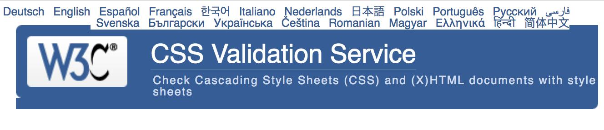
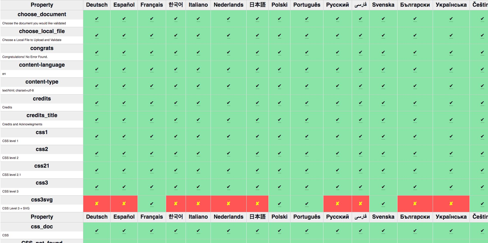

10-12 July: @JAlanBirdW3C speaks at the Financial Innovation and Payments Summit, in #NewPort RI 🇺🇸 @opal_group https://twitter.com/financialit_net/status/1141330797913432070
🗓️ July@w3c: a slow month as Northern hemisphere summer starts - https://www.w3.org/participate/eventscal.html
https://twitter.com/w3cdevs/status/11459908576041287682 - or it starts by developing a new type of strings (e.g. rdf:LocalizableString) that would, overtime, replace the basic string type; this would allow to stage updates to specs and implementations on a longer period
https://twitter.com/w3cdevs/status/1145993702730608641Since so many other specifications depend on #RDF core, the proposed charter suggests two approaches:
1 - either the group updates the basic definition of strings in RDF (known as langString) and thus updates all the dependent specs to reflect that change as needed.
This new proposed charter in the #SemanticWeb #LinkedData space proposes nothing less than a revision to the core of #RDF to enable proper support for #internationalization in strings. https://w3c.github.io/rdf-dir-literal/draft-charter.html https://twitter.com/w3c/status/1145622213225304064
https://twitter.com/w3cdevs/status/1145993701308751872#JSON strings have similar issues with regard to #internationalization - see some of the exploration @webi18n has done in that space too https://www.w3.org/TR/string-meta/
https://twitter.com/w3cdevs/status/1145993706358681600To comment on the charter, use the github repository where it has been developed https://github.com/w3c/rdf-dir-literal/issues
https://twitter.com/w3cdevs/status/1145993705184256000The problem space and the envisioned solutions are described in more details in RDF Literals and Base Directions https://w3c.github.io/rdf-dir-literal/
https://twitter.com/w3cdevs/status/114599370403084288014 July: Deadline to apply to the #w3cTPAC #diversity fund https://twitter.com/w3cdevs/status/1140656429084348417
https://twitter.com/w3cdevs/status/11460324665888358468 July: Deadline to register to the Workshop on Data Models for Transportation where the future of standards relating to automotive and transportation data will be discussed https://www.w3.org/auto/events/data-ws-2019/cfp.html https://twitter.com/w3c/status/1144233681827127297
https://twitter.com/w3cdevs/status/1146032464881704961Two important upcoming deadlines nonetheless:
https://twitter.com/w3cdevs/status/1146032463417892864.@torgo and @Lady_Ada_King talk about #diversity in the industry and in @w3c - in particular about the #w3cTPAC diversity fund at 2:20 - in their podcast interview with @MobileMatters_ https://twitter.com/MobileMatters_/status/1145677621918883840 https://twitter.com/w3cdevs/status/1146032466588835846
https://twitter.com/w3cdevs/status/1146297313754853376Web #developers #designers, we want to hear from you! Designed in collaboration with browser vendors and @w3c, @MDN just launched a Web Developer and Designer Needs Assessments survey: https://qsurvey.mozilla.com/s3/Developer-Needs-Assessment-2019
Take this opportunity to influence browser vendors! Let us know where you are experiencing difficulties when building for the Web.
https://twitter.com/w3cdevs/status/1151244163595296768登録は今開いています！
https://ti.to/w3c/w3c-developer-meetup-fukuoka-2019 https://twitter.com/keita_kawamoto/status/1140453009513578497
https://twitter.com/w3cdevs/status/1151779020683513856The #CSS Validator is currently available in 21 languages! 🤩🙌 Many thanks to all the volunteer contributors for making this free @w3c service accessible to Web #developers and #designers the world over 🌍
https://jigsaw.w3.org/css-validator/
There are other languages to serve, so if you are interested to translate in your native language, please find guidelines and instructions on how to contribute: https://jigsaw.w3.org/css-validator/translations.html
Thank you!
https://twitter.com/w3cdevs/status/1151874862740312064レジストレーション開始した！Registration is now open: https://ti.to/w3c/w3c-developer-meetup-fukuoka-2019 #developers #designers #Fukuoka #html5j @w3c_keio
https://twitter.com/w3cdevs/status/1153220214240219141This draft document is it the result of many individuals and organisations that have committed to working together to build a better #Web.
Feedback welcome! https://twitter.com/webfoundation/status/1153582532501430272
https://twitter.com/w3cdevs/status/1153605652457119744Last month, we, the devrel team, co-organized with @seattlejs a very successul and energizing #meetup! Check out the talks' videos shot that day: https://www.youtube.com/playlist?list=PLfCgUsc2B8DULnyLiN_ThYKJBWiPNf-tM
@dontcallmeDOM @NellWaliczek @deltakosh @dougsillars cc @tidoust ! https://twitter.com/seattlejs/status/1144053702774312960
https://twitter.com/w3cdevs/status/1154422029975769089Listen to Peter Snyder, privacy researcher @Brave, summarizing his talk at the W3C Track of @TheWebConf: how to improve the standards process to make it easier to protect browser users' privacy! https://vimeo.com/342289255 https://twitter.com/wseltzer/status/1139202516157992960
https://twitter.com/w3cdevs/status/1154710648904925184🙏 #developers #designers, please contribute!
By translating the @wai resources, you help expand the reach of accessibility information to make digital accessibility better for everyone https://twitter.com/w3c_wai/status/1156194755514122240
https://twitter.com/w3cdevs/status/1156210451816075266